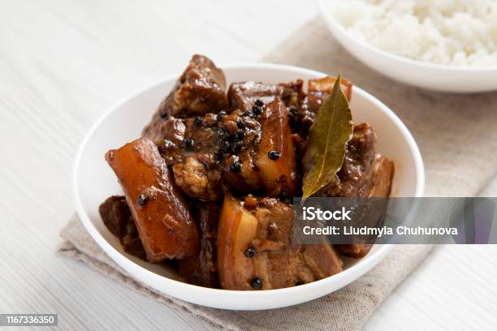

Home
Adobo

Description
A Filipino staple food usually prepared for
both everyday life and festivities
It involves braising pork cuts in soy sauce for rich flavors
Ingredients
- Pork cuts
- Soy sauce
- Garlic
- Bay Leaves
- Vinegar
- Black pepercorn
Steps
- Cut garlic into small pieces
- Branch in oil until light brown
- Sear pork cuts in the oil with the garlic until golden brown
- Add 2 cups of water
- Add 2 to 3 Bay leaves
- Add Vinegar
- Add Black pepercorn
- Let it boil until 3/4 of water has evaporated
- Serve in a ceramic bowl